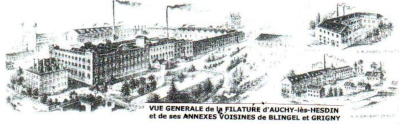
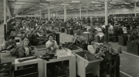

Quand nos ancêtres faisaient tourner les usines du Nord
Quand nos ancêtres faisaient tourner les usines du Nord
Préambule
Nous avons passé six mois à découvrir la branche Saint-Léger. Mais si l'on regarde uniquement les ascendants de Claude et d'Agnès, on découvre un nombre impressionnant de noms, de familles, presque tous dans le monde de l'industrie textile. Je vous propose maintenant de les découvrir. Et vous allez voir, c'est impressionnant : des dynasties industrielles, un témoignage au cœur de la grande tragédie du textile nordiste.
Aujourd'hui, je vous parle du contexte historique puis une introduction aux grandes familles qui nous constituent. Dans les prochaines semaines, je reviendrai sur chacune d'elles en détail.
Je vous conseille d'ouvrir ou d'imprimer une roue de l'arbre généalogique pour vous y retrouver facilement : 📖 Lire 📖 Imprimer
Des paysans fileurs aux marchands-fabricants
Avant qu'il y ait des usines, il y a eu des siècles de travail domestique. Dans les campagnes flamandes du XVIIe et du XVIIIe siècle, filer et tisser n'est pas un métier à part entière : c'est une activité complémentaire, pratiquée pendant les creux de l'agriculture. Les paysans travaillent à domicile sur des métiers dont ils sont propriétaires. Ils produisent du fil et du tissu, que des marchands-fabricants — échelon intermédiaire entre l'ouvrier et le négociant — collectent, redistribuent et vendent. C'est ce que les historiens appellent la proto-industrie : une économie dispersée, rurale, artisanale, mais déjà tournée vers de larges marchés.
Nos ancêtres les plus lointains s'inscrivent dans ce monde-là. Pierre Joseph Droulers, né en 1768 à Wattrelos, est issu d'une famille de censiers et d'échevins dont l'activité couvre la culture du lin, le filage et la distillerie. À Roubaix, les Pollet — dont descend Flavie Pollet, notre ancêtre — font partie des familles qui dominent la Fabrique Roubaisienne depuis des générations, certains historiens remontant leur influence jusqu'à Charles Quint. Ce n'est pas encore l'industrie. Mais c'en est la graine.
La bascule : 1790–1850
La rupture vient d'Angleterre, et elle est foudroyante. En une quarantaine d'années, des années 1790 aux années 1830, l'arrondissement de Lille bascule d'une économie préindustrielle — où l'activité textile est dispersée dans les campagnes — à une économie moderne, centralisée dans de grandes unités productives. La machine à vapeur, la spinning jenny, le métier mécanique : des inventions britanniques que les industriels du Nord traversent la Manche pour observer, copier, importer.
Le mouvement est irrésistible. De proto-industrie modeste, le textile devient une industrie florissante. Pour la rendre plus rentable, on centralise la production au même endroit. Les travailleuses du textile sont alors délogées de leur domicile et découvrent un nouvel univers : l'usine. Des milliers de fileuses et de tisserands qui travaillaient chez eux se retrouvent embauchés dans des bâtiments immenses, soumis aux horaires, à la discipline et au rythme des machines. Le travail à domicile recule. Les villages se vident vers les villes. Roubaix, Tourcoing, Lille explosent démographiquement.
La transition n'est pas douce. Philippe Saint-Léger, notre ancêtre, filateur au 32 rue des Tours à Lille, appartient à cette génération charnière qui fait le saut — passant du négoce à l'industrie, de l'atelier urbain à la grande filature mécanique. Ses contemporains font de même : les Droulers à Wattrelos, les Prouvost à Roubaix, les Bossut dans leurs ateliers.
Les trois filières de notre famille
| Matière | Villes | Nos ancêtres |
|---|---|---|
| Lin | Pérenchies, Armentières, La Madeleine | André et Claude Saint-Léger, administrateurs des Établissements Agache |
| Laine | Roubaix, Tourcoing | Prouvost (Peignage), Droulers, Leplat, Lorthiois |
| Coton | Roubaix, Tourcoing, Auchy-lès-Hesdin | Wattinne-Bossut (filature d'Auchy, 130 ans de direction familiale) |
Les grandes entreprises de la famille
Derrière les noms de famille, il y a des usines. Et pas des petites.
La Filature Monstre de Roubaix (1843) est la première grande aventure industrielle de nos ancêtres. Louis Motte la fonde avec son beau-frère Louis Wattinne et Cavrois-Grimonprez, chacun apportant un tiers des 600 000 francs-or — la part de Motte venant de la dot de sa femme Adèle Bossut, sœur de Pauline Bossut, notre ancêtre. L'usine est, à sa création, la plus grande filature de coton de France. Son nom dit tout : c'est un monstre, au sens propre.

La filature d'Auchy-lès-Hesdin est une histoire à part. Installée dans une ancienne abbaye bénédictine convertie en usine dès 1806 par Jean-Baptiste Say, puis exploitée par la famille Grivel, elle est vendue en janvier 1859 à trois associés — Louis Wattinne-Bossut, A. Droulers et B. Pruvost-Charlet — réunis sous la raison sociale Pruvost-Charlet et Cie. Droulers se retire dès 1860 en cédant sa part aux Wattinne, et la société prend le nom de Wattinne-Pruvost ; Pruvost sort à son tour en 1870, laissant les Wattinne seuls propriétaires. La famille dirigera l'usine sans interruption pendant 130 ans, jusqu'à l'incendie de 1989.

Les Établissements Agache naissent à Lille, et non à Pérenchies. En 1824, Donat Agache (1805–1857), fils de cultivateur, ouvre un négoce de lins et de fils rue du Croquet, dans le quartier Saint-Sauveur ; quatre ans plus tard il le transforme en filature de lin en s'associant à Florentin Droulers — frère de notre ascendant Louis Droulers, donc branche collatérale de notre arbre. Ce n'est qu'en 1849 que les deux associés rachètent à Julien Le Blan une filature de lin en faillite à Pérenchies, où se déplacera le centre de gravité de l'affaire. L'entreprise grandit, absorbe d'autres sites à La Madeleine et Seclin, et devient la plus grande filature de lin de France, avec 2 000 ouvriers à Pérenchies.
Notre famille lui est liée deux fois, par des voies indépendantes séparées d'un demi-siècle. D'abord par les Droulers, jusqu'à la séparation amiable des associés vers 1870 : Édouard Agache conserve alors Pérenchies, tandis que Charles Droulers — fils de Florentin, et cousin germain de notre Charles Henri Droulers — garde l'usine de Lille. Puis par les Saint-Léger, après 1918 : la filature familiale est vendue aux Établissements Agache, et André Saint-Léger, puis son fils Claude Saint-Léger, entrent au conseil comme actionnaires minoritaires — Claude devenant administrateur-délégué en 1929. Les usines sont entièrement détruites par la Grande Guerre — Pérenchies se trouve à trois kilomètres des lignes —, puis reconstruites à partir de 1919.

Le Peignage Amédée Prouvost (1851) est fondé à Roubaix par Amédée Prouvost, l'arrière-grand père d'Agnès Wattinne. C'est l'un des tout premiers grands peignages mécaniques de la région, avec celui de Lorthiois-Malard à Tourcoing — et les Lorthiois sont aussi dans notre arbre : Marie Lorthiois épouse James Leplat, grand-père maternel de Marie-Claire Leplat. Le Peignage Prouvost sera le noyau d'un empire qui s'étendra bien au-delà du textile : son petit-fils Jean Prouvost fondera en 1911 la Lainière de Roubaix (7 200 salariés, la plus grande filature d'Europe), puis lancera Paris-Match, Marie-Claire, Cosmopolitan et Télé 7 Jours.

Et il y a aussi, moins connus, les filatures Leplat à Tourcoing, fondées en 1886 par Émile Leplat, qui traverseront deux guerres et un siècle d'activité avant de fermer.
L'âge d'or et ses ombres : 1850–1940
En 1913, la région concentre 90 % de la production française de lin et 40 % de la laine. Roubaix passe de 8 000 habitants en 1800 à plus de 120 000 en 1900. Les cheminées d'usines s'élèvent partout. Plus de 400 000 Belges migrent vers le Nord pour travailler dans les filatures. Les grandes familles règnent : on se marie entre soi, on s'associe, on se prête des capitaux. Ce réseau serré d'alliances est visible dans notre propre arbre — les Droulers associés aux Agache, les Bossut alliés aux Wattinne et aux Motte, les Prouvost liés aux Droulers par le mariage de Joséphine.
Ce patronat est aussi profondément paternaliste et catholique. On construit des cités ouvrières, des chapelles, des œuvres sociales. Après la Grande Guerre, Marguerite Delemer, mère de Claude, prend personnellement en charge la reconstruction de la Cité Marguerite Saint-Léger à Pérenchies pour reloger les ouvriers dont les maisons avaient été détruites.
« En 1928, les Établissements Agache célèbrent leur centenaire. Le discours officiel vante "trois générations de labeur ininterrompu". Claude Saint-Léger a été nommé administrateur en 1923. »
Mais la crise de 1929 frappe durement. En mai 1931, 114 500 ouvriers se mettent en grève dans la région après une baisse de salaires décrétée par les patrons. L'évêque de Lille tente de servir de médiateur. Des émeutes éclatent à Roubaix. L'euphorie des années fastes laisse place à une fracture sociale béante.
L'effondrement : pourquoi tout s'est écroulé
Après 1945, une nouvelle période de prospérité s'ouvre. Les marchés absorbent la production, les carnets de commandes sont pleins. La Lainière de Roubaix atteint 7 200 salariés. Mais l'industrie nordiste, longtemps protégée par les marchés coloniaux et les barrières douanières, n'a pas assez modernisé ses équipements. Et le monde change.
Les raisons de l'effondrement sont multiples et se cumulent : la décolonisation ferme les marchés privilégiés d'Afrique du Nord ; les pays émergents — Asie, Amérique du Sud — produisent du textile à des coûts incomparablement inférieurs, parfois encouragés par les implantations à l'étranger des industriels du Nord eux-mêmes ; les chocs pétroliers de 1973 et 1979 renchérissent une industrie très énergivore ; enfin, la grande distribution et la mode rapide transforment radicalement les habitudes de consommation, rendant obsolètes les grandes productions standardisées.
La chute est vertigineuse. En trente ans, l'emploi textile dans la métropole lilloise passe de 190 000 à 15 000. Les fermetures s'enchaînent. Les Établissements Agache sont absorbés dès 1967 par les frères Willot, puis passent sous le contrôle de Bernard Arnault, qui en fera le noyau du futur groupe LVMH — sans que le nom Agache ne survive. La filature d'Auchy-lès-Hesdin ferme en 1989. La Lainière de Roubaix est liquidée en 1999.
Roubaix, qui avait été surnommée le « Manchester de France », devient au tournant du XXIe siècle la ville la plus pauvre de France. En une génération, un monde a disparu.
Nos principales familles
Ces familles convergent toutes, par le jeu des mariages et des associations, vers Claude et Agnès , qui s'unissent en 1923. Voici leur portrait rapide — chacune fera l'objet d'un épisode à part entière.
Les Bossut — le socle de tout
Jean-Baptiste Bossut (1790–1874)
Maire de Roubaix · Fabricant de tissus · Légion d'honneur
Le patriarche. Fabricant de tissus devenu maire de Roubaix dès 1840, il préside à la transformation d'un bourg de 8 000 habitants en ville industrielle. Il fait poser la première pierre du nouvel Hôtel de Ville de Roubaix. Ses filles font les alliances fondatrices : Adèle Bossut épouse Louis Motte et finance la Filature Monstre ; Pauline Bossut épouse Louis Joseph Wattinne, donnant naissance à la branche Wattinne-Bossut, dont Agnès est l'arrière-petite-fille.
Les Wattinne-Bossut — 130 ans à Auchy
Louis Wattinne (1810–1867)
Filature Monstre · Filature d'Auchy-lès-Hesdin · Vice-président de la Chambre des Arts et Manufactures de Roubaix
En épousant Pauline Bossut, il entre dans le cercle du grand patronat roubaisien. Il co-fonde la Filature Monstre en 1843, puis prend en 1859, avec deux associés, le contrôle de la filature de coton d'Auchy-lès-Hesdin ; sa famille en deviendra seule propriétaire en 1870. La famille Wattinne la dirigera 130 ans sans interruption, jusqu'à l'incendie de 1989. Il est aussi négociant en laine avec des bureaux dans les pays producteurs comme l'Argentine, l'Uruguay, l'Afrique du Sud, l'Australie et la Nouvelle Zélande... Ce négoce important, avec ses bureaux rue du château à Roubaix, ferme ses portes en 1970. Les bureaux occupés par Alain et Sébastien Thieffry sont démolis en Novembre 2025. En 1865, délégué par cent manufacturiers, il plaide à Paris contre le Traité de libre-échange avec l'Angleterre. Son portrait trône longtemps au Château Blanc d'Auchy.
Les Droulers — deux frères, deux voies
Pierre Droulers (1768–1844) et ses fils
Wattrelos · Proto-industrie, lin, sucrerie · Patriarche fondateur
Issu de censiers et d'échevins de Wattrelos depuis le XVIIe siècle, Pierre Joseph fait basculer la famille du monde rural vers l'industrie. Ses deux fils prennent des chemins différents : Louis Droulers devient fabricant à Wasquehal, père de Charles Henri Droulers ; Florentin Droulers s'associe dès 1828 à Donat Agache pour créer à Lille la filature de lin qui deviendra les Établissements Agache ; les deux hommes rachètent l'usine de Pérenchies en 1849.
Charles Henri Droulers épousera Joséphine Prouvost, unissant Droulers et Prouvost. Leur fille Madeleine Droulers épouse Eugène Wattinne — et leur fille Agnès Wattinne épouse Claude Saint-Léger.
Les Prouvost — de la laine aux magazines
Henri Prouvost (1783–1850) et Amédée Prouvost (1820–1885)
Roubaix · Peignage Amédée Prouvost (1851) · Maire adjoint de Roubaix
Henri, manufacturier et maire adjoint de Roubaix, est le patriarche. Son fils Amédée fonde en 1851 le Peignage Amédée Prouvost — l'un des premiers grands peignages mécaniques de France. Les générations suivantes bâtiront un empire : la Lainière de Roubaix (7 200 salariés), puis Paris-Match, Marie-Claire, Cosmopolitan, Télé 7 Jours. La fille d'Amédée, Joséphine Prouvost, épouse Charles Henri Droulers — grand-père maternel d'Agnès Wattinne.
Pierre-Joseph Bonte-Pollet — le politique
Pierre-Joseph Bonte-Pollet (1779–1864)
Maire de Lille · Député à l'Assemblée constituante de 1848 · Château de Branleux · Rue Bonte-Pollet à Lille
La figure la plus politique de tout l'arbre. Riche négociant et propriétaire à Lille, il s'engage dans les luttes du parti libéral sous la Restauration et Louis-Philippe. En novembre 1847, il préside à Lille l'un des banquets de la Campagne des banquets — le mouvement qui fera tomber la monarchie de Juillet trois mois plus tard. En avril 1848, il est élu à l'Assemblée constituante avec 167 844 voix. Son nom composé Bonte-Pollet signale l'union de deux familles : les Bonte, négociants lillois, et les Pollet, l'une des plus vieilles dynasties de la Fabrique Roubaisienne. Une rue de Lille porte son nom.
À Lille, en novembre 1847, Bonte-Pollet préside le banquet réformiste où Ledru-Rollin réclame le suffrage universel. Trois mois plus tard, la monarchie de Juillet s'effondre. Notre ancêtre était au cœur de l'histoire.
Auguste Longhaye et Aimé Ternynck — les alliés
Auguste Longhaye (1812–1878) · Aimé Ternynck (1812–1887)
Lille et Roubaix · Industrie et négoce textile · Sucre · Légion d'honneur
Auguste Longhaye, industriel lillois, est le grand-père d'André Saint-Léger par sa fille Amélie. Aimé Ternynck, né à Cassel, fonde en 1842 la maison Ternynck frères à Roubaix, puis bâtit un empire sucrier dans l'Aisne avec une dizaine de sucreries. Ses établissements sont distingués à l'Exposition Universelle de Chicago en 1893. La branche textile de son frère Henri développe à Roubaix une filature et un tissage de laine : l'usine qu'il fait construire boulevard de Fourmies avant 1894 est la plus ancienne usine roubaisienne encore debout — reconvertie depuis 2024 en tiers-lieu d'économie circulaire sous le nom Manufactures Tissel. Sa fille Lucie Ternynck épouse Adolphe Delemer, grands parents de Claude Saint-Léger.
Le fil conducteur : Philippe Saint-Léger
Avant de conclure, un retour aux sources. Car si les Bossut, Prouvost et Wattinne sont les dynasties les plus spectaculaires de notre arbre, il existe côté Saint-Léger un homme qui incarne à lui seul le passage d'un monde à l'autre.
Philippe François Joseph Saint-Léger (1787–1861)
Lille · Filateur au 32 rue des Tours · Libéral · Président des banquets de la Réforme à Lille
Né en 1787, deux ans avant la Révolution, Philippe Saint-Léger est filateur à Lille, à l'angle de la rue des Tours. Libéral convaincu, il s'engage dans la vie politique de la ville et préside les banquets de la Réforme — les mêmes réunions où Bonte-Pollet, son contemporain et parent par alliance, défend le suffrage universel. En 1848, quand la Deuxième République est proclamée, Philippe a 61 ans et a traversé l'Empire, la Restauration, la monarchie de Juillet. Son petit-fils Georges Saint-Léger sera le père d'André ; son arrière-petit-fils André Saint-Léger administrera des Etablissements Agache ; son arrière-arrière-petit-fils Claude Saint-Léger s'évade de Lille en 1915, débarque à Ouistreham en juin 1944, et meurt en service commandé en décembre de la même année. Quatre générations, une saga.
De Philippe Saint-Léger, filateur au 32 rue des Tours sous la monarchie de Juillet, à Claude Saint-Léger, chef de mission de liaison avec le 8e Corps Blindé Britannique en 1944 — quatre générations, un siècle d'histoire française, et toujours le textile du Nord comme toile de fond.
Cet article est le premier d'une nouvelle série. Les prochains épisodes reprendront chaque famille en détail : les Bossut, les Wattinne, les Droulers, les Prouvost, les Bonte-Pollet, les Ternynck et les Longhaye.